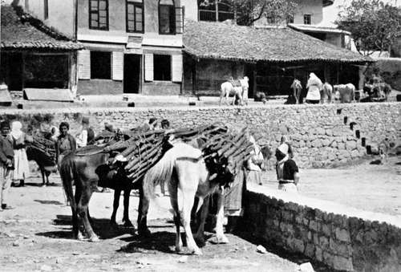

The Search After The Great White Heron. Part 3
Description
This section is from the book "Bird-Hunting Through Wild Europe", by R. B. Lodge. Also available from Amazon: Bird-Hunting Through Wild Europe.
The Search After The Great White Heron. Part 3
The mountaineers coming into the town are required to give up their rifles at the guard-house outside, but as they always have a revolver in their waistcloth this does not do much good. On bazaar days it is a curious and interesting sight to see these wild-looking people flocking into the town. On horseback and on foot they come in droves, driving small and shaggy ponies laden with firewood. Some of the younger women ride astride, the older ones stagger in on foot, veritable beasts of burden. I have seen old women-judging from their appearance, eighty years of age, though perhaps in reality not more than fifty-bent double under enormous loads of firewood which they have cut in the mountains and carried in on their heads. If they can't sell it they carry it back and bring it in again the next bazaar day. When they do sell it the price may amount to as much as fourpence!
Firewood Ponies
These poor old tottering creatures are barefooted and bareheaded, their only garments apparently a bit of rough sacking in front and another behind, and a coarse petticoat held together with a broad and heavy leather belt. Sitting on the curb at the edge of the path to rest, they are only able to rise again after repeated efforts. Once, seeing one of them vainly endeavouring to rise, I went out and gave a heave up behind to her load, to the great amusement of a crowd of loafers, who laughed and jeered at such an unusual act, while the poor old woman herself probably thought she was being moved on.
There are two dirty little Italian steamers running on the lake, which is over thirty miles long, and on one of these we embarked one morning for Plavnica, a small Montenegrin village at the farther end of the lake.
This lake is surrounded by high mountains, and, as is usual in such cases, subject to violent storms. I never experienced a single fine day on it. There was always a thunderstorm raging on one or other of the mountain peaks. While the rest were lit up by a brilliant sun, round one particular peak the storm-clouds would gather, and the lightning would flash and the thunder roll and mutter, while the wind would rise and cause a regular little cyclone.
Many White Herons were seen fishing about the shallows, and once, passing one of the submerged forests of willows which are so commonly seen in these parts, I saw a nesting colony of Herons through the glass at a distance of perhaps half a mile. I was almost sure that they were the Great White Herons, a nesting colony of which I was so anxious to find, and I made a mental note of the place with the intention of returning to pay it a visit at the first opportunity.
On arriving at Plavnica we arranged to sleep at a rough-looking wine-shop, or han, and while our things were being carried in I set Djouraschkovitch to work questioning his countrymen about the White Herons.
'Oh yes,' they said, 'there were any number of them, and they were nesting in great abundance.' One man declared that he knew a big tree quite close with at least fifty nests on it. He was engaged at once to conduct me to the place, while Djouraschkovitch made things straight and arranged about our supper.
Off I started with this man, with great hopes of an easy conclusion to my search. I ought to have known better. In whatever part of the world I have been in the peasants are almost invariably utterly ignorant of birds and quite unable to tell one from the other even in their own language. Neither the Spanish herdsmen nor the Albanian peasants, who see Eagles and Vultures every day of their lives, can tell the difference between them ; they don't, in fact, know there is any difference. I had brought with me a series of coloured tracings of birds, with the local names in various European languages to help me in making inquiries, but found them utterly useless. An Inspector of Fisheries in Roumania, for instance, a man sufficiently educated at all events to keep accounts and write reports, on being shown a Little Egret said it was Lebeda. Now I knew Lebeda in the Dobrudscha means Swan ! He only saw the bird was white, but could not see that the shape of an Egret is as unlike as it could possibly be to that of a Swan. It is sufficiently exasperating to make a long day's journey only to find something not worth going out of the way for; and yet you have to chance it. Your information may be right, or it may be wrong, it probably is wrong, but all the same you must go and see for yourself; and you have to pay just as much for false information as if it had led to a good result. Sure enough, after walking, or rather wading, about three miles we saw a large tree in which were perhaps a dozen nests of Ardea cinerea, the Common Grey Heron !
At this time of year the low-lying lands are fearfully water-logged. Everywhere the ground is flooded. The fields have from a foot to two feet of water ; the forests are submerged half-way up the trunks of the trees ; the roads-where there are any-are a succession of puddles and morasses, so that working here it is simply impossible to keep dry. On foot you are constantly mid-leg deep in water, and even riding you very soon become wet with the splashing of water and liquid mud. Anybody liable to rheumatism would very soon be crippled after birds'-nesting here. And it is curious what a number of snakes there are in the water ; even the puddles on the road often have three or four snakes swimming about in them, and in the ditches they simply swarm. Most of them are harmless, but on one of these aquatic expeditions I came on a very deadly-looking viper coiled up asleep on the stile between one flooded field and another. The broad, flat head and unmistakable expression left no doubt as to its dangerous character. I nearly got a photograph of it, but while putting in the plate, after focusing at very close quarters, it uncoiled itself and glided away, greatly to the relief of my guide, who was in a great fright.
Continue to:
- prev: The Search After The Great White Heron. Part 2
- Table of Contents
- next: The Search After The Great White Heron. Part 4